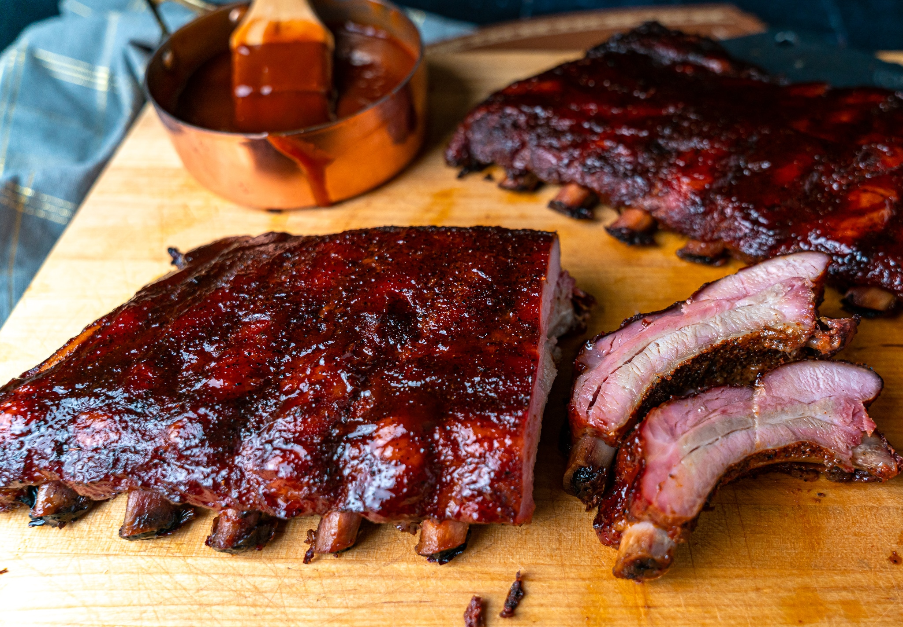

Baby Back Ribs

Beautifully smoked back ribs
This is one of the most famous cuts among pit masters.
the many diferrent ways you can prepare these makes it something you can make
over and over and never get bored of it
Ingredients
Rub
- 1/4 cup dark brown sugar
- 1/4 cup sea salt
- 1/4 cup pimentón (spanish paprika)
- 2 tbsp ground black pepper
- 2 tsp granulated onion
- 2 tsp granulated garlic
- 1 tsp ground cumin
- 1/2 tsp ground cinnamon
- 1/4 tsp ground nutmeg
Main
- 4 racks of baby back ribs
- 2 cups bbq sauce of choice
Steps
- When redady to cook, set smoker temperature to 250°F
- Make the rub: In a small bowl, whisk together the brown sugar, salt
,pimentòn, pepper, onion, garlic, cumin, cinnamon, and nutmeg
- Remove the membrane from the bone side of the ribs by working the tip of a pairing
knife underneath the membrane over a middle bone. use paper towels to get a firm grip
,and then pull the membrane off.
- Sprinkle the rub over both sides of the ribs
- Place the ribs bone-side down on the grill grates. close the lid and smoke untill the
internal temp reads 203°F and the ribs are browned and tender
- Remove the ribs from the grill. increase the grill temp to 375°F
- Brush the ribs with your BBQ sauce. When the grill is hot, return the Ribs
to the grill, close lid, and cook for 6-8 minutes per side, or until the sauce has set.
- Remove the ribs from the grill. Cut each rack into halves. Enjoy!